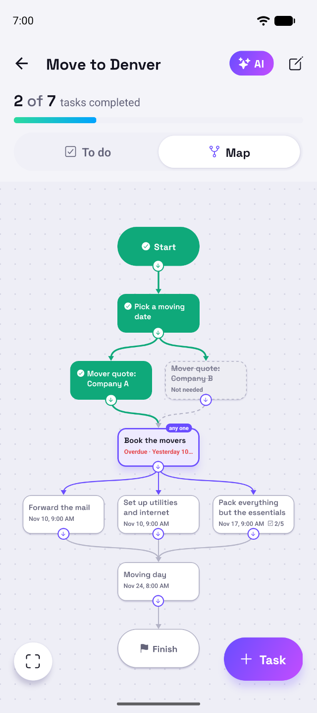
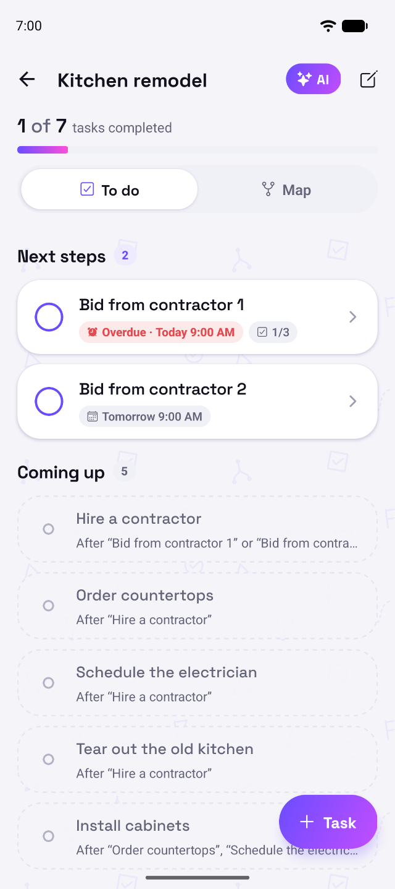
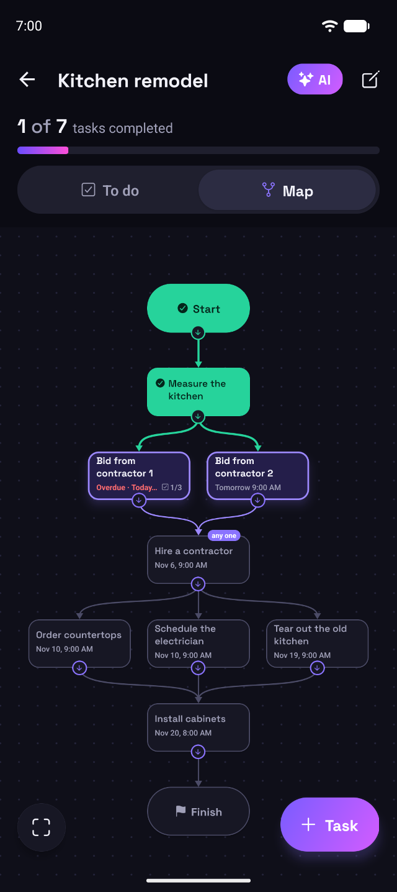
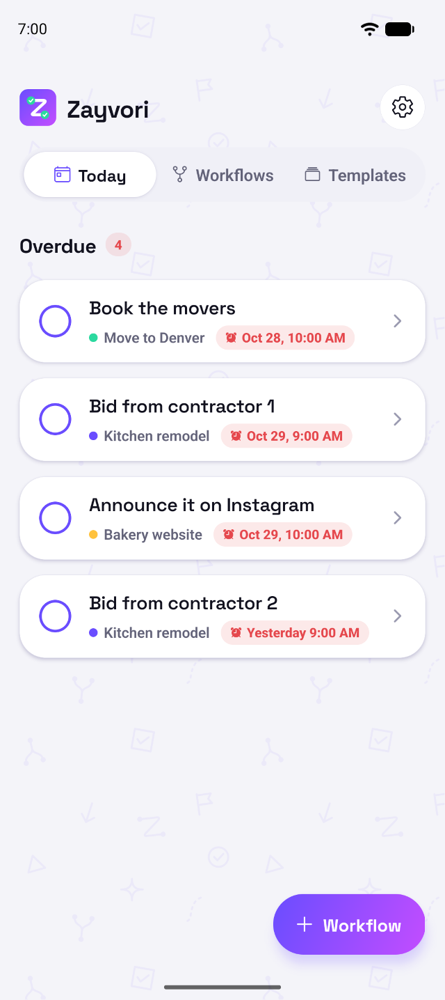
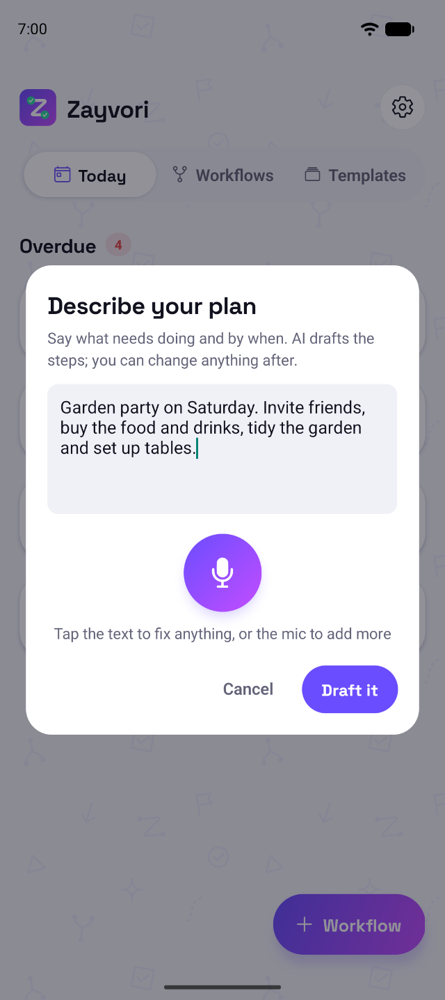
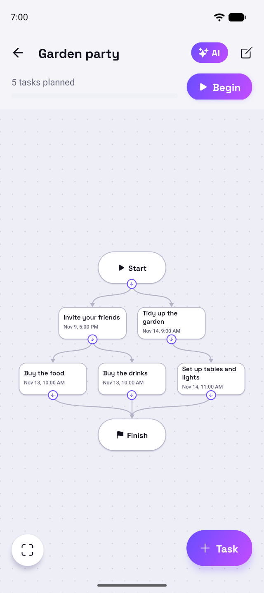

Move to a new home
Quotes, movers, mail and packing in the right order, with checklists for the details.
9 tasksMoving, remodeling, planning an event, or the paperwork that comes around every year: some tasks have to wait for others. Zayvori knows which, so your list only ever shows what you can actually do today.
Free to downloadNo accountWorks offline

Real projects aren’t a straight line. Zayvori keeps back what can’t be done yet, so everything in front of you is something you can actually do. Here’s the same kitchen remodel both ways.
Seven things, all asking for attention. Which can you do today? You have to work it out again every time you look.

Two things you can do now. The rest waits its turn and says what it’s waiting for. When the first bid comes back, the other is set aside for you.
Every plan has a map. Green is done, the highlighted tasks are ready, and anything you no longer need quietly steps aside.

A move, a kitchen remodel and a birthday party all at once? The Today tab gathers what’s overdue, what’s due today and what you can do next, across all of them. Check it off right there.
Running late? Check off a task a few days behind and Zayvori offers to move what comes after it, so nothing ends up due too soon.

Pick a template, choose a start date, and every due date falls into place. Save any plan as your own template and reuse it as often as you like, or send it to a friend: they open it in Zayvori and get the whole plan, ready to start.
Not every job is a one-off. For the ones that come around again, like monthly bills, a quarterly tax return or yearly car maintenance, set the plan to repeat: each round starts by itself, right on schedule.
Quotes, movers, mail and packing in the right order, with checklists for the details.
9 tasksBids first, then countertops, the electrician and tear-out side by side.
8 tasksResume and research together, then the letter, the interview and the follow-up.
6 tasksVenue, invitations and food side by side, all the way to the big day.
7 tasksInsurance quotes, the registration and a service, set to come around each year.
6 tasksType it, or tap the mic and say it: “Garden party on Saturday. Invite friends, buy the food and drinks, tidy the garden and set up tables.” AI drafts the steps, what waits on what, and when each is due.
It plans by the hour as well as the day. Try “Christmas dinner for 10, everything ready by 3pm” and every dish gets its own timed steps, from the turkey going in to carving, with handy notes like oven temperatures. Holidays such as Thanksgiving and Mother’s Day land on your country’s date.
It’s good for exam prep, too. “AP Bio exam on May 11. Go through every unit, do the past free-response questions, two full practice tests” becomes weeks of steps that build toward the day, with notes on where to find the material.
The draft opens on the map, ready to change. Nothing starts until you tap Begin.
Part of Zayvori Premium, free for 14 days. Your description, today’s date and your phone’s country setting are sent to draft the steps; nothing else leaves your phone. What’s sent.


There’s no account to make and no server holding your tasks. Zayvori keeps everything on your device, so it works anywhere and nobody else sees your plans. (The AI features in Premium are the exception: when you use Describe it or Change with AI, what you type, and for Change with AI that one plan, is sent to draft the changes. Nothing else is.) Back up to a file whenever you like and keep it in Drive, your email or your files, ready for a new phone.
Zayvori is in final testing. Want to hear when it’s out, or try it early?
Email us to get notified We'll only use your email to reply. No mailing list.